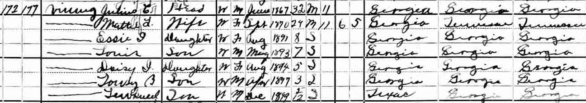
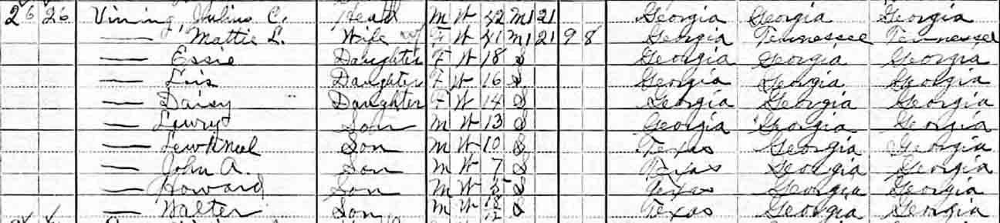
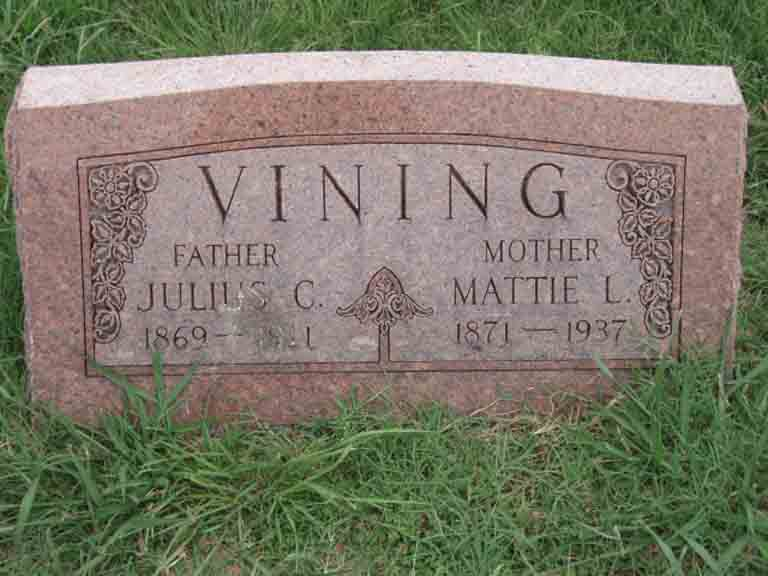

Census Data
| 1900 | 1910 | 1920 | 1930 | 1940 | |
| Julius Cornelius Vining | 32 | 42 | dead | ||
| Mattie Lee (Johnson) Vining | 29 | 41 | ? | ? | dead |
| Essie I. Vining | 8 | 18 | ? | ? | ? |
| Louis Vining | 7 | 16 | ? | ? | ? |
| Daisy I. Vining | 5 | 14 | ? | ? | ? |
| Lawry B. Vining | 3 | 13 | ? | ? | ? |
| child Vining | dead | ||||
| Lew[…] Vining | 5 m. | 10 | ? | ? | ? |
| John Albert Vining | 7 | ? | ? | ? | |
| George Howard Vining | 5 | ? | ? | ? | |
| Walter Lawson Vining | 1 y., 6 m. | ? | ? | ? |


Death Data
Headstone for Julius Cornelius Vining and Mattie Lee (Johnson) Vining, in Odd Fellows Cemetery, Caddo Mills, Hunt County, Texas (from Find A Grave):